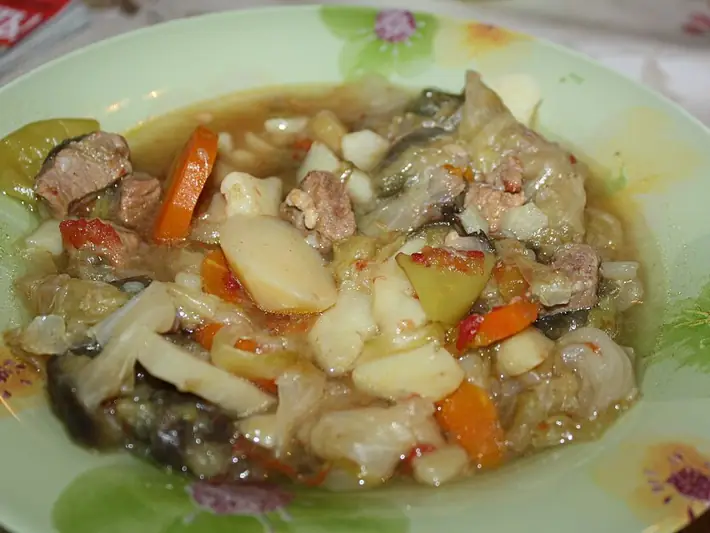

Фото: Ds02006, Public domain

Азу по-татарски
Говядина, тушённая с солёными огурцами, картошкой и томатом
100 мин4 порц.574 ккал на порциюБ 33 · Ж 34 · У 33Татарская кухня
Продукты на 4 порц.
- Говядина600 г
- Картофель5 шт
- Лук репчатый2 шт
- Огурцы солёные3 шт
- Томатная паста2 ст. л.
- Чеснок2 зуб.
- Растительное масло4 ст. л.
- Вода2 стак.
- Лавровый лист1 шт
- Соль1 ч. л.
- Перец чёрный молотый0,5 ч. л.
- Петрушка по желаниюпо вкусу
Как готовить
- Нарежьте говядину брусками 1×1×4 см. Обжарьте в половине масла на сильном огне небольшими порциями по 5 минут до корочки.
- Добавьте лук полукольцами и жарьте 5 минут, затем томатную пасту ещё 2 минуты.
- Влейте горячую воду, положите лавровый лист, накройте и тушите на слабом огне 50 минут, пока мясо не станет мягким.
- Пока тушится мясо, нарежьте картофель брусками и обжарьте в оставшемся масле на среднем огне 10 минут до золотистого цвета.
- Солёные огурцы очистите от грубой кожуры и нарежьте соломкой.
- Добавьте к мясу картофель и огурцы, посолите (осторожно, огурцы солёные), поперчите. Тушите ещё 15 минут, пока картофель не станет мягким.
- Положите давленый чеснок и зелень, выключите огонь и дайте постоять 5 минут.
Совет. Огурцы берите бочковые солёные, а не маринованные с уксусом, иначе соус будет резким. Солите только в конце, когда попробуете соус с огурцами.